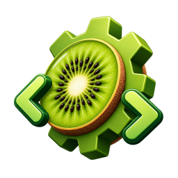

1 Đăng nhập providerSign in to a provider
export ANTHROPIC_API_KEY=sk-...
# hoặcor
kiwii auth login
kiwiiLocal-first · MIT · Bun
Kiwii là harness cho AI coding agent trong terminal và trình duyệt, ngang Claude Code và Codex CLI về tính năng. Nó không gọi về bất kỳ máy chủ nào ngoài nhà cung cấp mô hình bạn tự chọn. Kiwii is a coding-agent harness for your terminal and browser, on par with Claude Code and Codex CLI. It talks to nothing but the model provider you configure.
curl -fsSL https://raw.githubusercontent.com/dannyluutpt/Code-Harness/main/install | bash
irm https://raw.githubusercontent.com/dannyluutpt/Code-Harness/main/install.ps1 | iex
Hoặc tải binary ở trang
Releases và đặt vào
PATH.
Or grab a binary from the
Releases page and put it
on your PATH.
$ kiwii › giải thích cấu trúc repo nàyexplain how this repo is structured ⏺ Read package.json ⏺ Glob packages/*/package.json ⏺ Grep "export default" 16 package, điểm vào tại 16 packages, entrypoint at packages/kiwii/src/index.ts CLI, TUI và Web UI dùng chung lõi ở CLI, TUI and the web UI share the core in packages/core ›
Phiên, lịch sử và mã nguồn nằm trên máy bạn. Kiwii chỉ kết nối tới nhà cung cấp mô hình bạn khai báo. Sessions, history and your code stay on your machine. Kiwii only reaches the provider you configure.
Đọc thẳng CLAUDE.md, .claude/settings.json, commands, agents và skills sẵn có.
Không cần chuyển đổi gì.
Reads your existing CLAUDE.md, .claude/settings.json, commands, agents and
skills as they are. Nothing to migrate.
Không cần Node, không cần cài phụ thuộc. Tải về, đặt vào PATH, chạy.
No Node, no dependency tree. Download it, put it on your PATH, run it.
kiwii) và Web UI chạy localhost (kiwii web).
A terminal TUI (kiwii) and a localhost web UI (kiwii web).
kiwii run "…" với --format json, --continue,
--session. Dùng được trong script và CI.
kiwii run "…" with --format json, --continue,
--session. Built for scripts and CI.
PreToolUse,
PostToolUse, UserPromptSubmit, Stop, SessionStart,
SessionEnd, PreCompact, PermissionRequest,
Notification.
KIWII.md (đọc cả AGENTS.md và CLAUDE.md), bộ nhớ dài hạn tự động
theo dự án, tự nén ngữ cảnh, tiếp tục phiên cũ.
KIWII.md (it also reads AGENTS.md and CLAUDE.md), automatic
per-project long-term memory, auto-compaction, session resume.
SKILL.md (đọc cả ~/.claude/skills),
slash command viết bằng Markdown, agent con tuỳ chỉnh, plugin.
MCP client (stdio/HTTP with OAuth), SKILL.md skills (including
~/.claude/skills), Markdown slash commands, custom subagents, plugins.
/commit, /pr, /review, /init.
Năm chế độ quyền, đổi bằng Shift+Tab ngay giữa phiên. Khung nhập đổi màu theo chế độ đang bật, nên bạn luôn biết mình đang ở đâu trước khi gõ Enter. Five permission modes, cycled with Shift+Tab mid-session. The prompt box takes the colour of the active mode, so you always know where you stand before pressing Enter.
Hỏi bạn trước mỗi thao tác ghi file và mỗi lệnh shell. Asks before every file write and every shell command.
Tự duyệt sửa file, vẫn hỏi trước khi chạy lệnh. Edits files freely, still asks before running commands.
Chỉ đọc. Agent khảo sát và đề xuất kế hoạch, không đụng vào file. Read-only. The agent investigates and proposes a plan without touching a file.
Tự duyệt sửa file, tool chỉ đọc và các lệnh shell đã biết là an toàn; còn lại vẫn hỏi. Auto-approves edits, read-only tools and known-safe shell commands; asks for everything else.
Duyệt mọi thứ không nằm trong deny list. Chỉ dùng khi bạn biết rõ mình đang làm gì. Approves everything not explicitly denied. Only when you know exactly what you are doing.
Ngoài ra còn allow/deny list theo mẫu: On top of that, allow and deny lists by pattern: Bash(git *),
Edit(src/**), Read(.env).
export ANTHROPIC_API_KEY=sk-...
# hoặcor
kiwii auth logincd du-an-cua-banyour-project
kiwii # TUI
kiwii web # Web UIkiwii run "viết test cho parserwrite tests for the parser"
kiwii run "…" --format json
kiwii -c # tiếp tục phiêncontinue
Gõ /init trong phiên đầu tiên để Kiwii tự viết KIWII.md cho dự án.
Run /init in your first session and Kiwii writes a KIWII.md for the project.
Không phải học lại. Kiwii giữ nguyên tên lệnh, phím tắt và định dạng file cấu hình bạn đã quen. Nothing to relearn. Kiwii keeps the command names, the keys and the config files you already use.
CLAUDE.md.claude/settings.json.claude/commands.claude/agents.claude/skills/clear /model /mcp/login /rewind /resume-p -c -r# ghi chúnotecurl -fsSL https://raw.githubusercontent.com/dannyluutpt/Code-Harness/main/install | bash